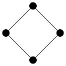
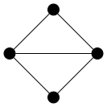
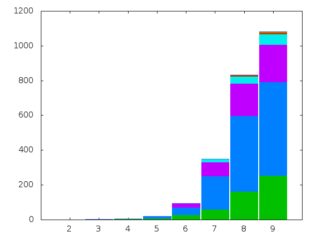

In this post we compute the chromatic index of all graphs on at most nine vertices with ten edges or fewer.
As in Colouring Small Graphs and Colouring Small Graphs: Update the source code for this experiment is presented as a Drakefile. As this Drakefile very similar to the Drakefiles for those earlier experiments we try to add some value by making several improvements to the quality of the source code in the hope of improving the generalisability of our method and the reproducibility of our results.
Overview
The goal is to compute the chromatic indices of all graphs whose order is at most nine. In this experiment we do part of this computation for graphs whose size is at most ten. The reason why we look at graphs with only a small number of edges is that we are using the chromatic program on the line graph \(L(G)\) to compute the chromatic index \(\chi^{\prime}(G)\) of \(G\) (justified by the observation that \(\chi^{\prime}(G) = \chi(L(G))\)). The chromatic program is slow for graphs on more than ten vertices. Therefore, as the order of \(L(G)\) is equal to the size of \(G\), we are restricted to graphs of small size.
As with the earlier experiments into the chromatic number, we consider connected graphs as a separate case. Also, the sets of graphs, both connected and all graphs, are sets of non-isomorphic graphs.
So there are two simulations whose results are presented below.
- The chromatic indices of all non-isomorphic connected simple graphs with order at most nine and size at most ten.
- The chromatic indices of all non-isomorphic simple graphs with order at most nine and size at most ten.
As things stand, we have very little in the way of verification of our results other than a little by-hand checking of total counts of graphs compared against data generated by Gordon Royle.
Experimental Details
The graph data we use is generated by geng from the gtools collection from nauty. To specify graphs of a specific size using geng we can provide the size as an optional extra argument after the order. For example, to generate all non-isomorphic connected graphs on four vertices with three edges (here piped through listg into circo for visualisation purposes):
$ geng -qc 4 3 | listg -y | circo -Tsvg -O $options
where $options was previously defined as:
$ options="-Nfixedsize=true\
-Nlabel=\
-Nshape=circle\
-Nheight=0.2\
-Nwidth=0.2\
-Nstyle=filled\
-Nfillcolor=black"To generate graph data with a range of sizes an optional size argument can be given as a range in the form min:max where 0 for the upper bound is interpreted as \(n \choose 2\). For example, to generate all non-isomorphic connected graphs of order four with size at least four:
$ geng -qc 4 4:0 | listg -y | circo -Tsvg -O $options
For the purposes of computing chromatic indices we transform every graph into its line graph. Line graphs can be constructed with the linegraphg program from gtools. For example, the linegraphs of the previous four graphs are:
$ geng -qc 4 4:0 | linegraphg -q | listg -y | circo -Tsvg -O $options
The -q switch for linegraphg, as with geng, suppresses auxiliary output.
As we have done in earlier experiments, we take the generated graph data in DOT format and, using csplit, split it across multiple files with one graph per file.
The resulting line graph data is then processed by chromatic in the identical manner described in Colouring Small Graphs. The resulting data on the distribution of chromatic numbers (here, interpreted as chromatic indices) is then collated and tabulated, also identically as in the previously mentioned post. That distribution data is presented below in the results section along with two plots whose construction is explained now.
The table created by joining together the per-order distributions of chromatic indices is not in the perfect format for plotting with Gnuplot so a Drake rule transforms it into a new tab separated values file with an extra header row added and the final row of column totals removed.
output/data.tsv <- output/table.txt
head -n-1 $INPUT\
| sed -e '1i X\t2\t3\t4\t5\t6\t7\t8\t9\t' >> $OUTPUTAnother rule then transforms the above generated tsv data into a plot. The plotting is done by Gnuplot, implemented as a Drake method exploiting a little hack to pipe a Gnuplot program into Gnuplot.
plot()
echo "\
clear;
reset;
set style data histogram;
set style histogram columnstacked;
set style fill solid border;
set boxwidth 0.95 relative;
unset key;
set term png;
set output \"$[OUTPUT]\";
plot for [COL=$[ORDER_MIN]:$[ORDER_MAX]] '$[INPUT]' using COL title columnheader;
" | gnuplot
output/histogram.png <- output/data.tsv [method:plot]The variables appearing in the Gnuplot program string are all Drake variables. The $INPUT and $OUTPUT variables are the normal automatically generated variables set when the method is called from the rule to which the method is attached. The $ORDER_MIN and $ORDER_MAX variables are set manually inside the Drakefile and are used elsewhere.
Results
| \[n = 2\] | 3 | 4 | 5 | 6 | 7 | 8 | 9 | |
|---|---|---|---|---|---|---|---|---|
| \[\chi = 2\] | 0 | 1 | 2 | 1 | 2 | 1 | 2 | 1 |
| 3 | 0 | 1 | 4 | 8 | 26 | 58 | 162 | 254 |
| 4 | 0 | 0 | 0 | 10 | 45 | 193 | 435 | 538 |
| 5 | 0 | 0 | 0 | 2 | 21 | 80 | 187 | 215 |
| 6 | 0 | 0 | 0 | 0 | 0 | 18 | 39 | 59 |
| 7 | 0 | 0 | 0 | 0 | 0 | 0 | 9 | 13 |
| 8 | 0 | 0 | 0 | 0 | 0 | 0 | 0 | 4 |
| 9 | 0 | 0 | 0 | 0 | 0 | 0 | 0 | 0 |
| Total: | 0 | 2 | 6 | 21 | 94 | 350 | 834 | 1084 |

| \[n = 2\] | 3 | 4 | 5 | 6 | 7 | 8 | 9 | |
|---|---|---|---|---|---|---|---|---|
| \[\chi = 2\] | 0 | 1 | 3 | 5 | 10 | 15 | 26 | 37 |
| 3 | 0 | 1 | 5 | 14 | 46 | 123 | 350 | 772 |
| 4 | 0 | 0 | 0 | 10 | 55 | 258 | 749 | 1476 |
| 5 | 0 | 0 | 0 | 2 | 23 | 104 | 305 | 568 |
| 6 | 0 | 0 | 0 | 0 | 0 | 18 | 57 | 125 |
| 7 | 0 | 0 | 0 | 0 | 0 | 0 | 9 | 22 |
| 8 | 0 | 0 | 0 | 0 | 0 | 0 | 0 | 4 |
| 9 | 0 | 0 | 0 | 0 | 0 | 0 | 0 | 0 |
| Total: | 0 | 2 | 8 | 31 | 134 | 518 | 1496 | 3004 |